在上篇中，我已经介绍了美团点评的业务情况、大前端的技术体系，其中大前端的技术全景图如下：
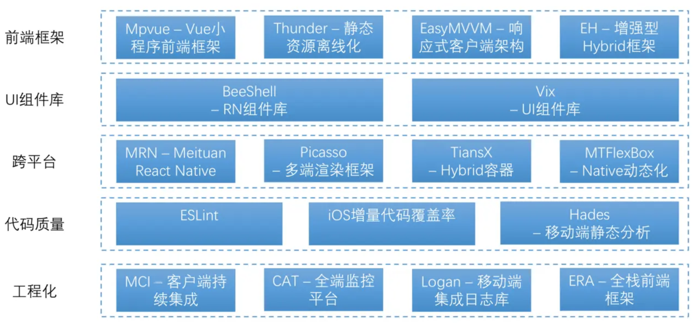
上篇重点介绍了工程化和代码质量的部分，工程化涵盖了客户端持续集成平台-MCI、全端监控平台-CAT、移动端集成日志库-Logan和全栈前端框架-Era。代码质量部分重点介绍了ESLint在大规模项目中落地实践和移动端静态分析工具-Hades。
在这篇文章中，我们将继续介绍大前端技术体系中的跨平台、UI组件库和前端框架。
跨平台动态化方案
跨平台、动态化始终是移动互联网时代永恒的话题，在性能体验和研发效率之间不断寻找平衡，诞生了一批批跨平台动态化方案。
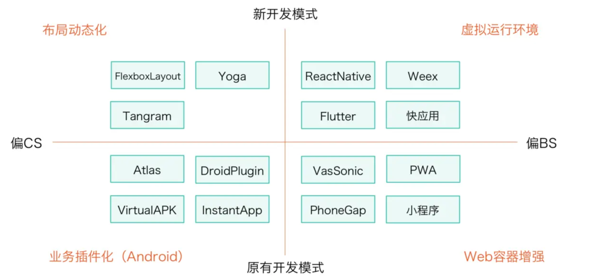
将业界主流的跨平台方案整理一下，大致分为四个类别：
在跨平台、动态化方案中并不存在银弹，每个方案都存在一定的取舍，下图就总结了各个方案在用户体验、稳定性、上线实时性、开发效率和迁移效率五个方面的对比总结：
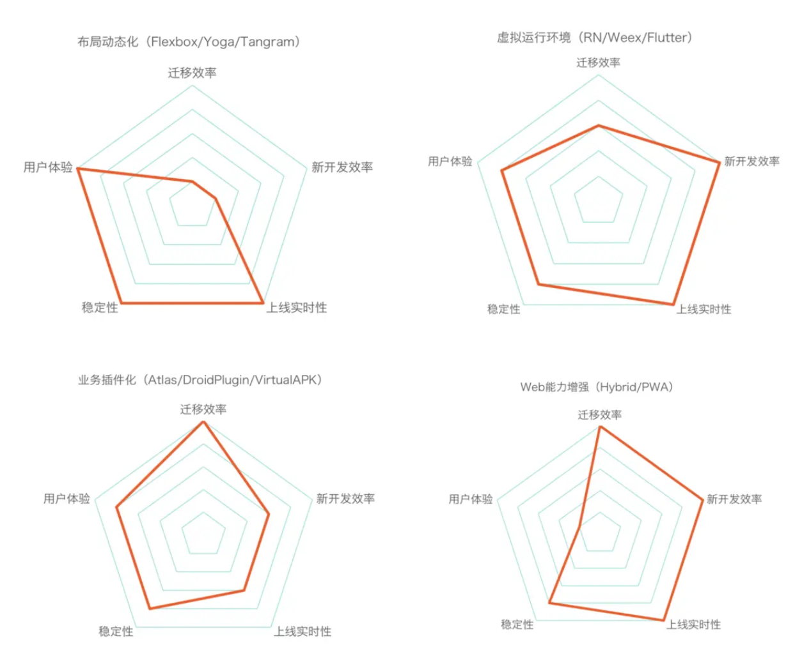
每种方案都有优点和缺点，所以每种方案的适用场景是不一样的。
美团的动态化方案
美团点评针对多种业务形态和各个业务的阶段，沉淀了多种跨平台解决方案，总结如下图：
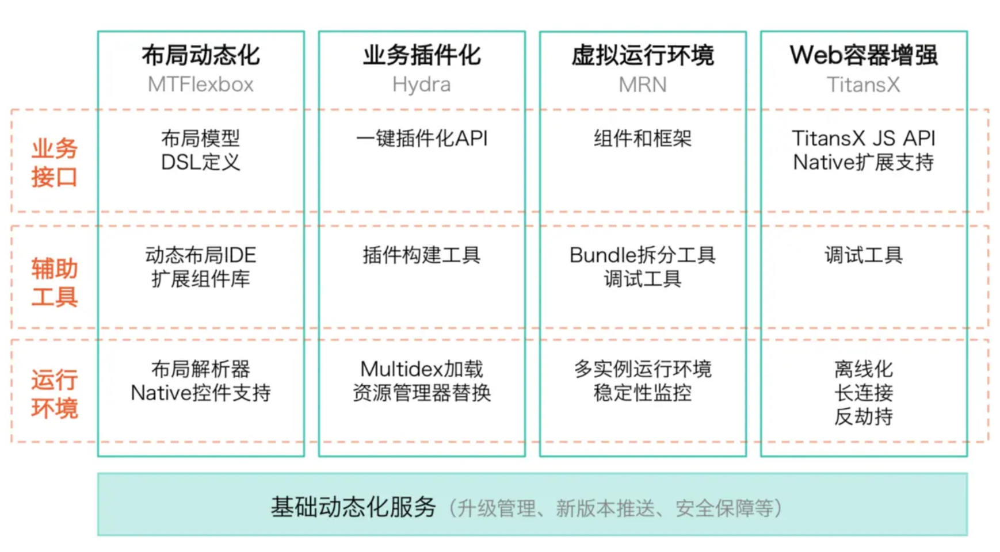
每种技术方案都需要周边的配套设施来支持，从底层依次是运行环境、辅助工具和业务接口，所以在每种技术选型上都需要慎重，尤其对于中小型公司，结合自身业务寻找合适的技术框架来满足业务开发最为重要，而不要仅仅为了追求最新、最炫而盲目采纳新技术。
MRN
MRN-Meituan Reative Native，顾名思义可以知道这是美团基于RN框架进行封装优化的一个跨端动态化框架，下图可以看到MRN的整个周边设施建设：
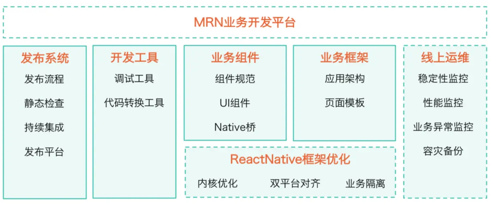
需要涵盖完整的研发周期，例如发布系统中需要能够有打包MRN的能力、对MRN代码进行发布和代码检查；需要配套的开发工具，提供将原生代码转换成MRN的工具；在业务开发中，首先要对MRN框架进行大量优化，对其性能进行优化，核心包进行拆包优化大小，抹平双平台的差异，同时也需要沉淀大量业务的MRN组件和原生能力的桥接；线上运维部分需要包括对异常错误、性能、稳定性等方面的监控。
Picasso
Picasso是大众点评移动研发团队自研的高性能跨平台动态化框架，经过三年多的孕育和发展，目前在美团多个事业群已经实现了大规模的应用。
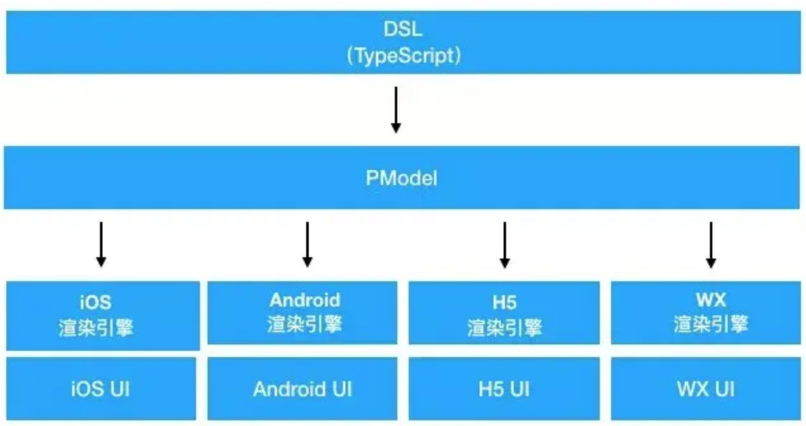
Picasso应用程序开发者使用基于通用编程语言的布局DSL代码编写布局逻辑。布局逻辑根据给定的屏幕宽高和业务数据，计算出精准适配屏幕和业务数据的布局信息、视图结构信息和文本、图片URL等必要的业务渲染信息，我们称这些视图渲染信息为PModel。PModel作为Picasso布局渲染的中间结果，和最终渲染出的视图结构一一对应；Picasso渲染引擎根据PModel的信息，递归构建出Native视图树，并完成业务渲染信息的填充，从而完成Picasso渲染过程。需要指出的是，渲染引擎不做适配计算，使用布局DSL表达布局需求的同时完成布局计算，即所谓“表达即计算”。
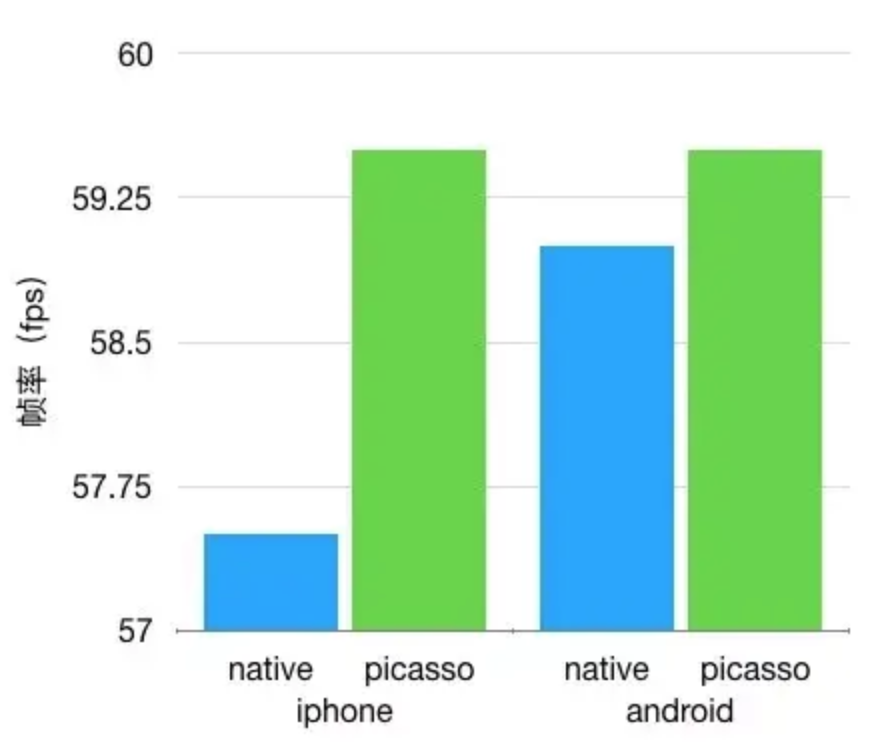
业界对于动态化方案的期待一直是“接近原生性能”，但是Picasso却做到了等同于原生的渲染效率，在复杂业务场景可以达成超越原生技术基本实践的效果。就目前Picasso在美团移动团队实践来看，同一个页面使用Picasso技术实现会获得更好的性能表现。
Picasso实现高性能的基础是宿主端高效的原生渲染，但实现“青出于蓝而胜于蓝”的效果却有些反直觉，在这背后是有理论上的必然性的：
详细可以查看参考资料[1]。
beeshell - RN组件库
为了进一步降低开发成本、提升产品迭代的效率，美团开始推广使用 RN 技术。随之而来，相关业务方开始提出对 RN 组件库的诉求。2018 年 11 月，公司内部发起了 RN 组件库建设，旨在提供全公司共用的组件库。鉴于我们团队在开源 beeshell 1.0时，积累了丰富的经验，于是就加入到了公司级 RN 组件库的项目共建中。完成组件库开发后，我们决定将共建的成果贡献出来，并以 beeshell 升级 2.0 的形式进行开源，共计开源 38（33 个组件与 5 个工具）个功能。在服务社区的同时，也希望借助社区的力量，进一步完善组件库。
beeshell 2.0 效果图如下：
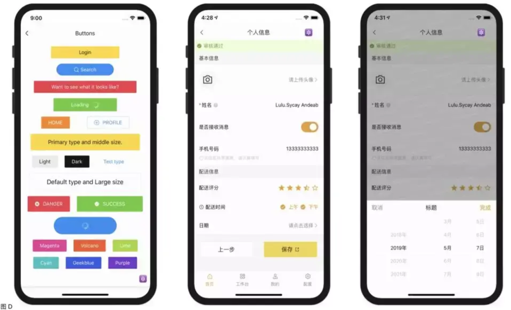
整体架构如下：
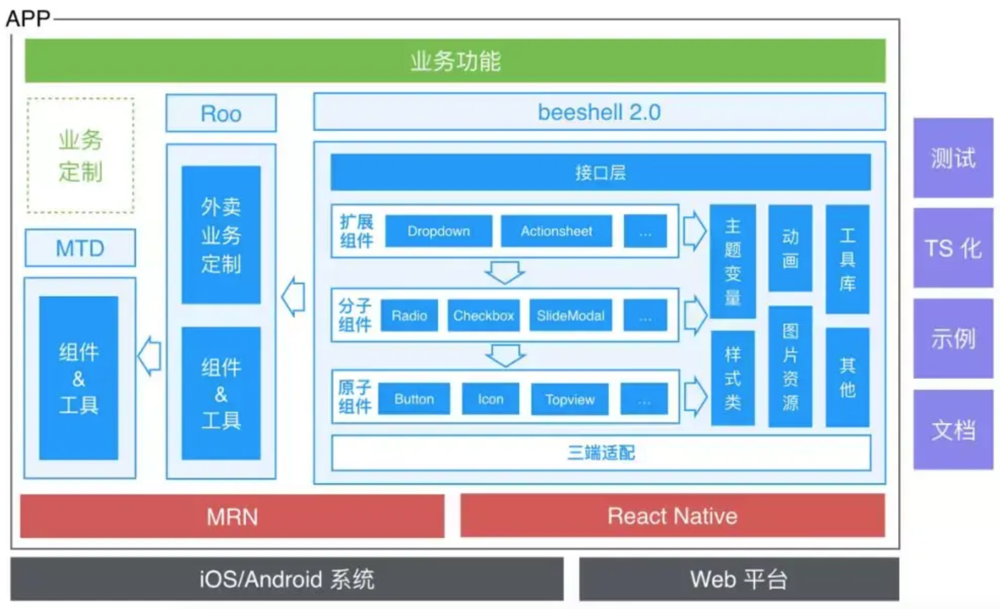
组件库由 1.0 的一个项目演变成 2.0 的三个项目（版本），形成组件库体系。具体包含：公司通用版本MTD、外卖定制版本Roo和开源版本beeshell。
beeshell组件库使用了分层的架构风格，分成了接口层、组件层、工具层以及三端适配：
接口层。汇总所有组件，统一输出，使用全部引入的方式，方便组件使用。另外，为了避免引入过多无用组件，引起资源包过大，也支持组件的按需引入。
组件层。细分为原子、分子、扩展组件。 与 beeshell 1.0 相比，我们对组件在更细的粒度上进行拆分。同时，层次划分也更加精细、明确。如上图 F 所示：基础组件细分为分子、原子组件。这样，组件的继承、组合方式更加灵活，能够最大化代码复用。而且，原子、分子、扩展组件，各层次组件各司其职，“关注度分离”，兼顾通用性和易用性。
工具层。与 beeshell 1.0 相比，工具更加完备。不但新增了树形结构处理器、校验器等；而且工具的独立性更强，与组件完全解耦，与组件配合实现功能。 这样，一方面，使得组件实现更加简洁，提升了组件的可维护性；另一方面，可以将工具提供给用户，方便用户开发，提升组件库的功能性、易用性。而且，工具与组件的解耦遵循“关注度分离”的原则。 三端适配。RN 在整体上实现了跨平台，iOS、Android、Web 三端使用一套代码，但是在一些细节方面，例如：特殊 API 的支持、相对位置计算等，各个平台有较大差异。为了更好的支持三端，保证跨平台稳定性，还需要在这一层做很多适配工作。
除此之外，整个组件库体系，还具备以下特点：更加完善的测试方案；丰富的代码示例；使用 TypeScript（以下简称 TS）语言进行开发，充分利用 TS 的类型定义与检查；针对每个组件都有详细的文档说明。
详细可以查看参考资料[2]。
Vix - Web UI组件库
Vix是金融BU沉淀了Web前端组件库，适用于美团金融的业务场景，基于Vue框架，服务了超过60个业务产品。
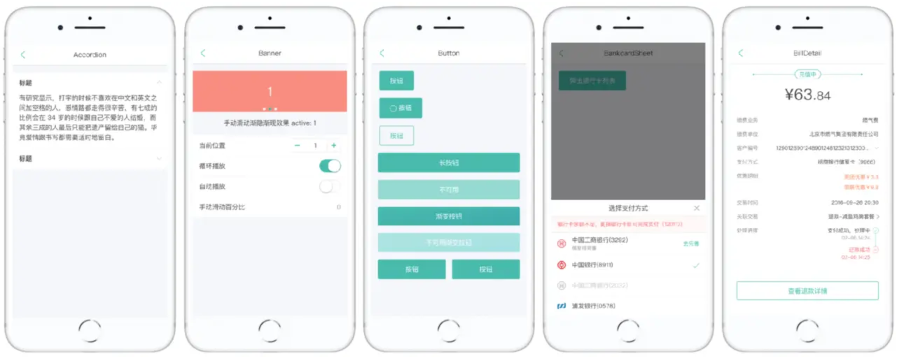
为了打造高效组件库需要具备以下三个特点：
在组件库建设过程中经历了三个阶段：产生期，发展期，优化期。
产生期主要是萌生了组件库的想法，主要是为了解决组件复用和标准化的问题，同时当时开源项目定制化成本高，无法满足需求。
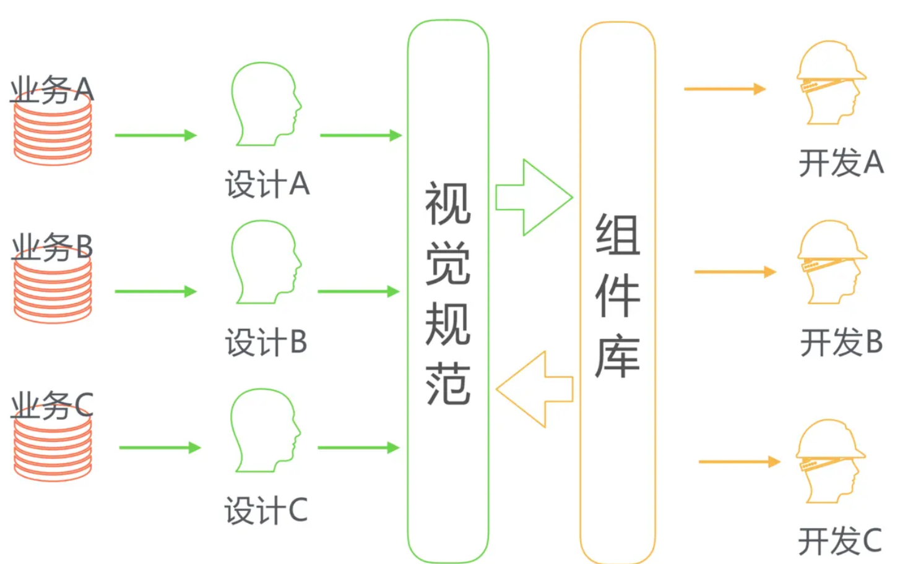
在这个阶段，不同的业务、设计团队共同合作，制定视觉规范，从而沉淀通用的组件库，这样不同业务的开发同学就能够采用组件库实现标准统一的业务样式。
发展期：Vix 如何打造可复⽤用性强的组件体系?
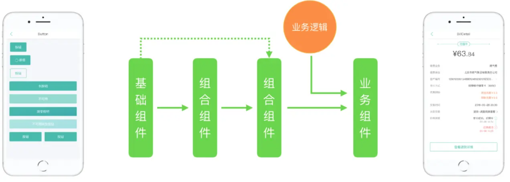
通过对功能点的梳理抽象出一个个原子单元组件，保证每个单个组件职责单一，组件对外接口一致。然后可以通过对组件进行组合，并且赋予业务逻辑形成业务组件。
优化期：Vix 如何让开发者使⽤用简洁易易上⼿手?
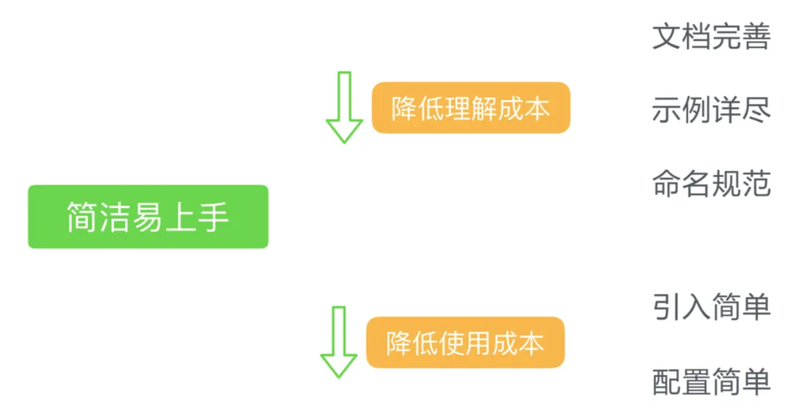
优化期主要让开发同学能够更加方便的使用Vix，于是从文档完善、提供示例、命名规范方面降低理解成本，通过引入简单、配置简单降低使用成本。
mpvue - Vue小程序框架
mpvue 是一款使用 Vue.js 开发微信小程序的前端框架。使用此框架，开发者将得到完整的 Vue.js 开发体验，同时为 H5 和小程序提供了代码复用的能力。如果想将 H5 项目改造为小程序，或开发小程序后希望将其转换为 H5，mpvue 将是十分契合的一种解决方案。
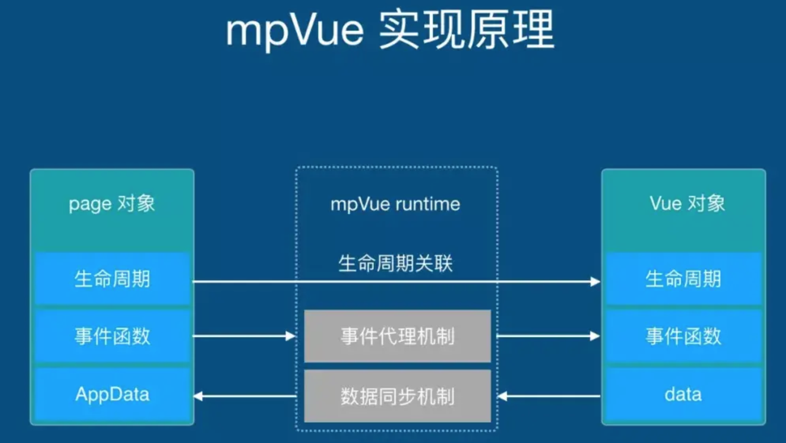
Vue.js 视图层渲染由 render 方法完成，同时在内存中维护着一份虚拟 DOM，mpvue 无需使用 Vue.js 完成视图层渲染，因此我们改造了 render 方法，禁止视图层渲染。熟悉源代码的读者，都知道 Vue runtime 有多个平台的实现，除了我们常见的 Web 平台，还有 Weex。从现在开始，我们增加了新的平台 mpvue。
生命周期关联：生命周期和数据同步是 mpvue 框架的灵魂，Vue.js 和小程序的数据彼此隔离，各自有不同的更新机制。mpvue 从生命周期和事件回调函数切入，在 Vue.js 触发数据更新时实现数据同步。小程序通过视图层呈现给用户、通过事件响应用户交互，Vue.js 在后台维护着数据变更和逻辑。
可以看到，数据更新发端于小程序，处理自 Vue.js，Vue.js 数据变更后再同步到小程序。为实现数据同步，mpvue 修改了 Vue.js runtime 实现，在 Vue.js 的生命周期中增加了更新小程序数据的逻辑。
详细可以查看参考资料[3]
Thunder - 资源离线化
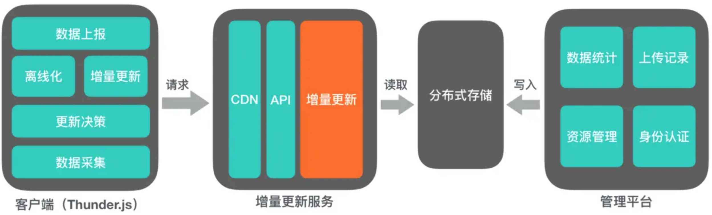
Thunder 是一个渐进式资源缓存与离线化方案。它通过浏览器本地存储(localStorage/IndexedDB)缓存资源，并且基于 service-worker 提供了离线化能力。Thunder 的接入方式简单，不会侵入你的业务代码，仅需简单的配置，即可让你的 Webpack 项目享受高速资源加载。
EH - 增强型Hybrid框架
EH - Enhanced Hybrid框架是美团金融研发的针对Hybrid业务场景的增强型框架。Hybrid实现虽然在研发效率上有很大优势，但同时也存在大量的用户体验问题。
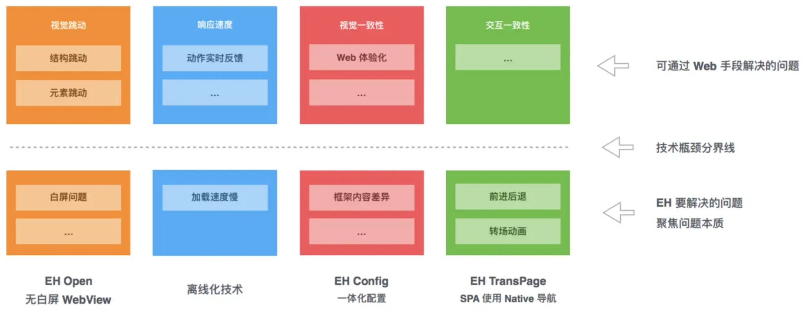
页面白屏问题，无法做到原生页面在切换时候的流畅度。白屏问题的本质原因在于原生页面切换到Web页面时候，Web页面这时候还未加载渲染完成，因此会导致白屏问题。解决方案就是在当前原生页面中通过一个不可见的webview将页面进行加载，当webview页面完全加载完成后通知原生页面然后进行跳转。
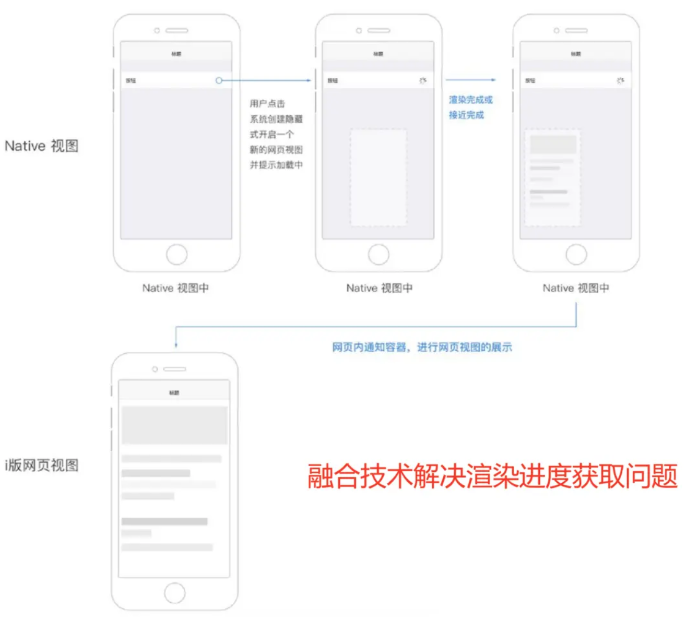
离线化技术，通过资源离线化，线上增量更新，实现页面的加载性能提升，接近于原生的渲染体验。
交互一致性，由于SPA的前端系统在页面交互上难以做到原生一致的体验，例如左滑回退操作等等，EH TransPage通过使用Native导航结合SPA页面实现，在交互体验上和原生保持一致。
一体化配置，前端页面在Webview中缺乏对外部宿主的有效控制，例如导航栏样式、状态栏文字颜色等等，EH Config提供一套接口可以让前端页面灵活进行配置，实现视觉一致性。
下图是EH的整体架构图：
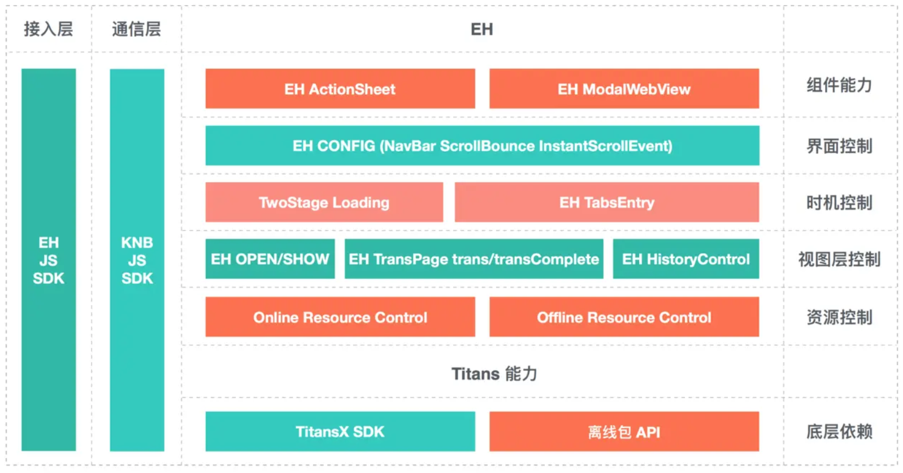
美团点评是一个多业务形态的平台，各个业务发展阶段和技术诉求都不尽相同，因此前端技术在美团点评各个团队中百花齐放，诞生了众多的解决方案。下面我分享一下几个代表性团队的前端技术体系。
金融团队
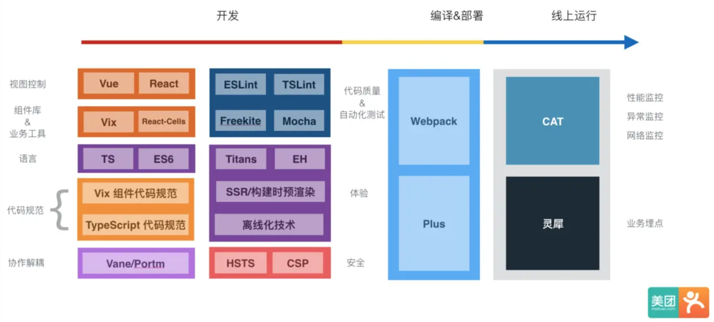
上文中已经介绍过Vix组件库和EH的Hybrid增强框架，这张图更加完整的展现了金融团队前端技术体系的全景，从开发、编译、部署到线上运行等环节。
详细可以查看参考资料[4]
酒旅团队
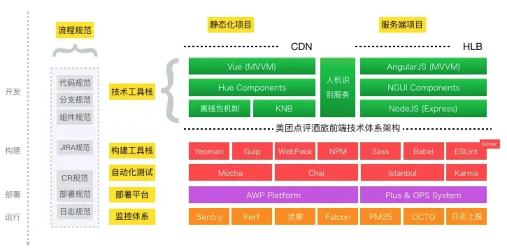以上是酒旅前端团队的技术体系结构图，我们有两种共存的项目类型（静态化项目和服务端项目），静态化项目是通过CDN进行承载，使用Vue进行功能开发，同时借助移动端样式组件库提升开发效率，通过离线包机制和KNB (Native Bridge)增强页面在容器内的表达能力，最后通过AWP（自建的静态化发布系统）可以高效的进行上线部署。
服务端项目不同的是使用NodeServer进行承载，前端通过AngularJS/VueJS进行功能开发，同时配合NGUI（AngularJS样式组件库）快速进行页面搭建，Node端框架选用的是Express，服务的部署通过OPS（内部的运维发布系统）完成。
人机识别服务是我们在前端角度设计和开发的一套安全机制，它包含前端SDK和基于Node实现的验证服务，可以用于接口的防抓取、防止接口被第三方非法调用等场景。目前线上接入的业务平均拦截率在30%左右，接口TOP90的响应时间在9ms以内。
构建工具栈中我们通过Yeoman开发了团队的脚手架，开发者可以通过脚手架快速的进行项目搭建和组件开发，通过Gulp和Webpack进行项目的构建和打包，NPM作为团队统一的包管理工具，Sass作为CSS的预编译工具提升CSS代码的可维护性，Babel作为ES6的编译工具，ESLint作为团队的代码检查工具保证代码的规范一致，并且接入了Sonar。同时借助一些开源的自动化测试工具提升开发阶段的代码质量。
监控体系中Sentry用于线上错误信息的收集和监控，Perf平台用于Web端性能数据的收集，灵犀用于业务的统计和埋点，Falcon一方面用于Server的监控报警，一方面用于业务监控和报警（比如火车票的抢票失败率和接口调用情况），PM25是我们自建的一套针对NodeServer进程粒度的开源的监控报警系统，用于确保线上Node服务的稳定性。
详细可以查看参考资料[5]
美团点评这几年业务不断扩张发展，基础架构团队不断沉淀基础能力夯实平台能力，各个业务团队也是各显神通，不断积累框架并在公司内外部进行推广使用。
本文重点介绍了工程化、代码质量、跨平台动态化、组件库和前端框架等方面，同时也列举了金融和酒旅团队的前端技术体系建设情况。希望能够让你对于美团点评的前端技术体系有个大概的了解，当然这些仅仅基于公开资料整理而成，仅仅是整个技术体系的冰山一角。
最后，美团点评在大量招前端资深/专家工程师，如果有兴趣近距离接触美团点评大前端技术框架，欢迎私信给我进行内推。
[1]Picasso开启大前端的未来：mp.weixin.qq.com/s/lqyo7YzQ_…
[2]开源React Native组件库beeshell 2.0发布：mp.weixin.qq.com/s/5XgNTQdBm…
[3]用Vue.js开发微信小程序-开源框架mpvue解析：mp.weixin.qq.com/s/fY3HMV__w…
[4]美团点评金融平台Web前端技术体系：tech.meituan.com/2018/03/16/…
[5]美团点评酒旅前端的技术体系：tech.meituan.com/2017/05/12/…
解密国内BAT等大厂前端技术体系-美团点评之上篇（长文建议收藏）
『奶爸码农』从事互联网研发工作10+年，经历IBM、SAP、陆金所、携程等国内外IT公司，目前在美团负责餐饮相关大前端技术团队，定期分享关于大前端技术、投资理财、个人成长的思考与总结。